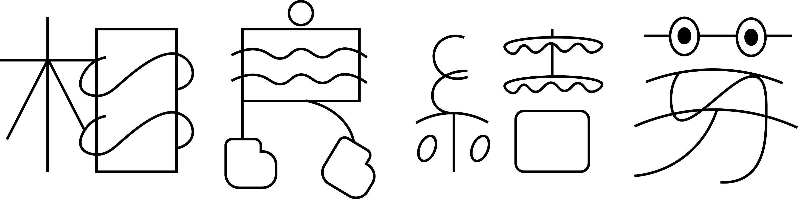
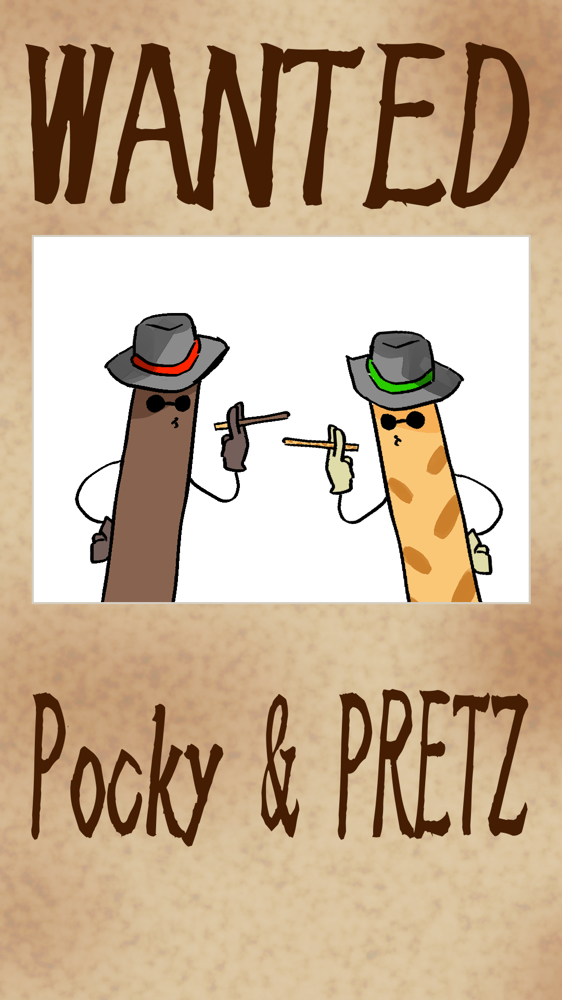

主な活動

自分の名前からロゴを作成
Adobe Illustratorを使用

依頼で作成したイラスト
CLIP STUDIO PAINTを使用

コンビニでアルバイトしていた時の販促用イラスト
CLIP STUDIO PAINTを使用
新しい注釈を追加
簡単なアニメーション作成
CLIP STUDIO PAINTを使用
特記事項
ロゴ作成、イラストレーション、アニメーション、サイト作成が好き。とにかくいろいろなクリエイティブなことへの好奇心を持っていて何でもチャレンジしてみたいという前向きな意欲を感じる。現在はZOZOBASEでアルバイトをしている、以前はコンビニエンスストアでのアルバイトをしていた。高校では軽音楽部に所属していたためギターも弾くことも好きらしい。